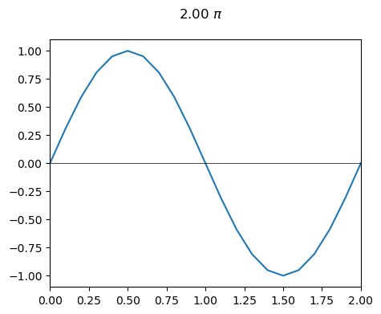
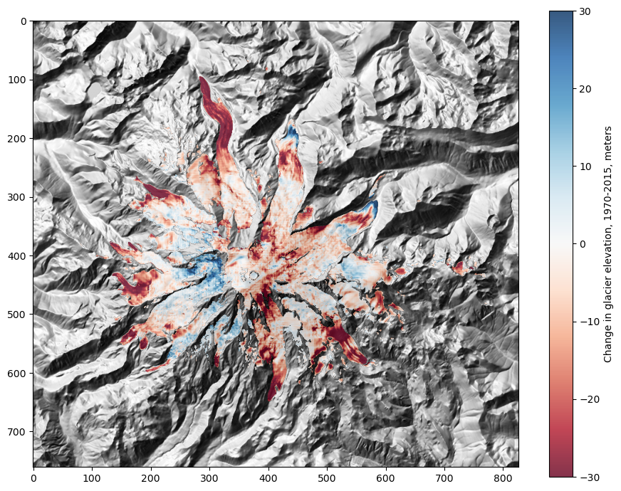

Part 0: General Python Exercises¶

00: Introduction to python for hydrologists
01: Functions and scripts
02: Namespace, modules, packages, and objects
03: Useful standard library modules
03: Solutions to Useful standard library modules exercises
04: File input and output
05: NumPy

05: NumPy exercise solutions

06: matplotlib — 2D and 3D plotting
06a: Using Matplotlib to Create Animation

07: Using functions to solve an equation– The Theis example
07b: VSCode Tutorial
08: Working with tabular data in Pandas

09: GeoPandas - DataFrames with geometry for GIS applications
09: Geopandas exercise solutions

10: Using Rasterio and Numpy to examine ice loss on Mt. Rainier

11: Using Xarray to look at Daymet precipitation around Mt. Rainier